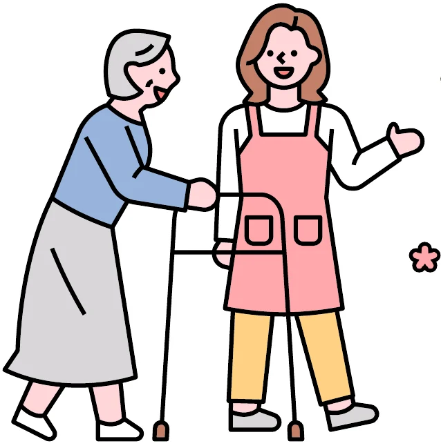
Contents
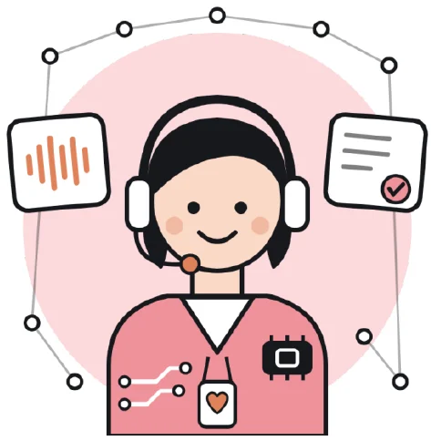
디테일한 문제 정의를 통해 정확한 해결책으로
사람이 AI가 대체할 수 없는 일에 집중할 수 있게 돕는 도구
향후 노인 인구 세계 1위 전망
재가급여 수요 증가 전망
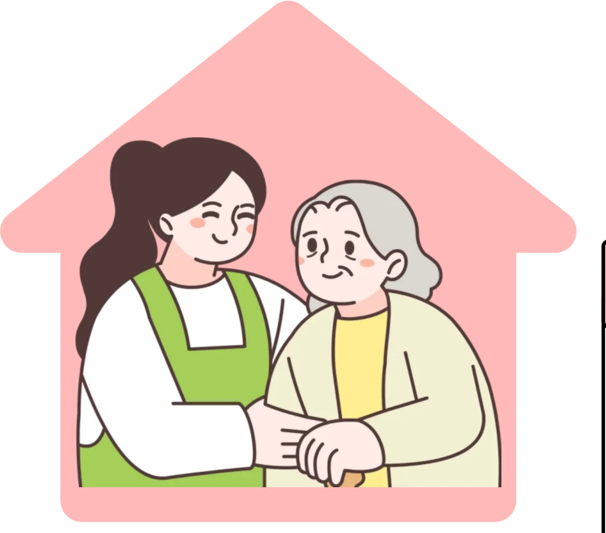
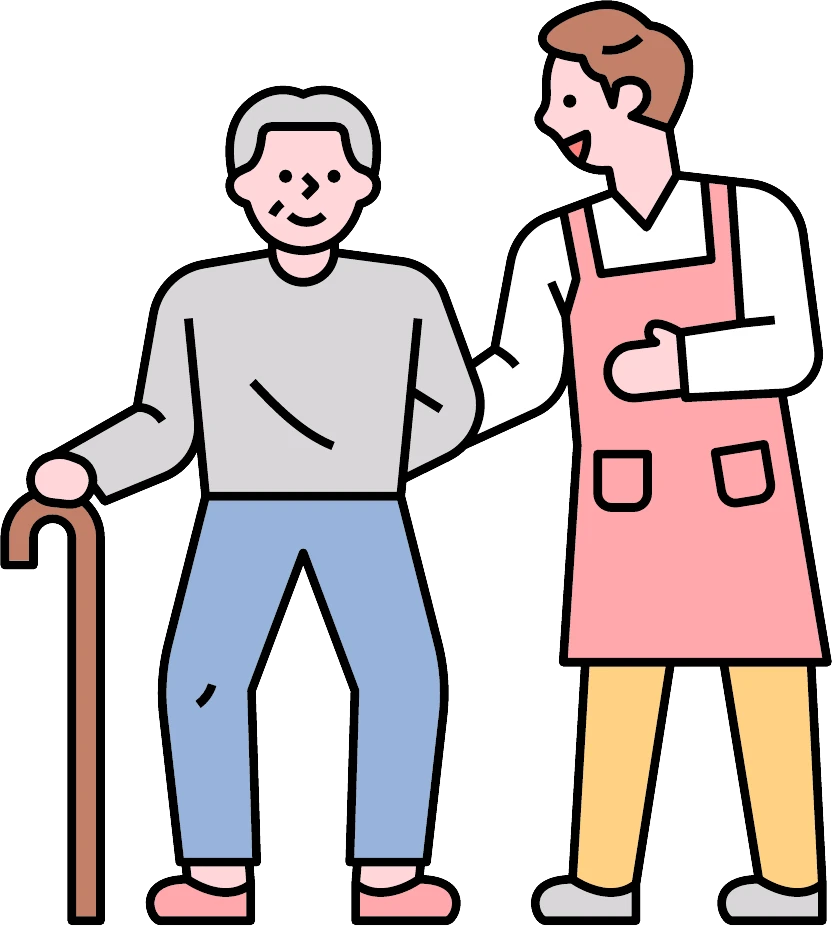
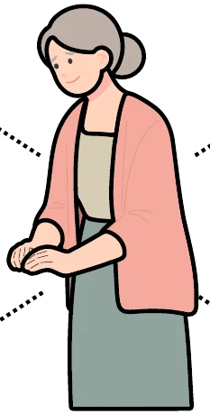
요양보호사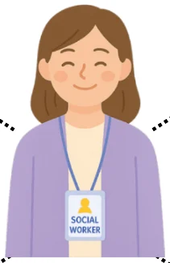
사회복지사전체 장기요양기관 기준
전체 장기요양기관 기준
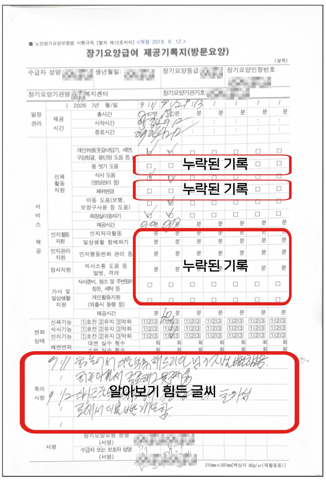
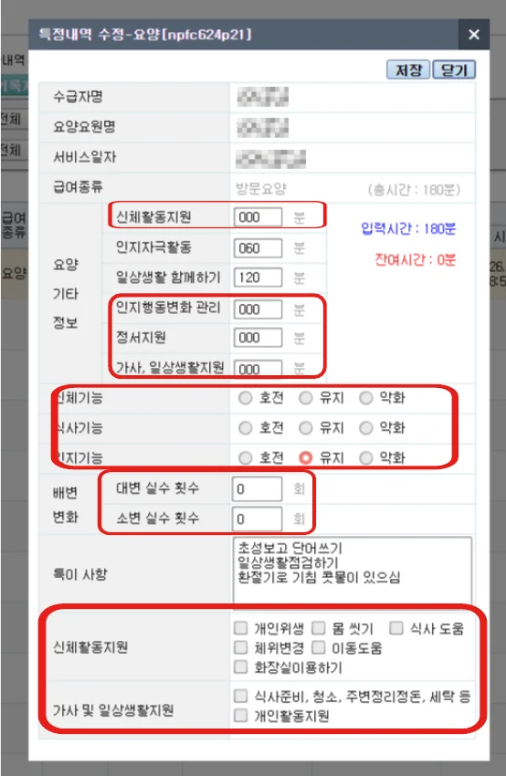
저장하는 도구, 받아쓰는 도구는 있어도
‘확인 가능한 방문요양 기록’을 만드는 도구는 확인되지 않았습니다
음성 메모를 기록 양식에 맞는 초안으로 변환하고, 담당자의 검토·승인 후
공단 프로그램에 자동 입력하는 에이전틱 AI 서비스입니다.
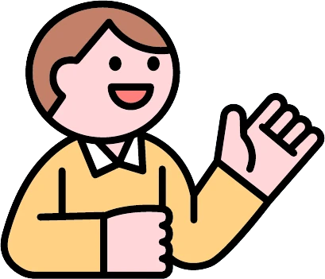
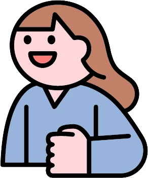
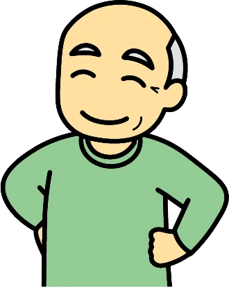
수급자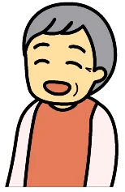
요양보호사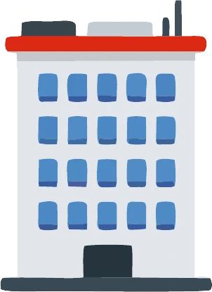
공단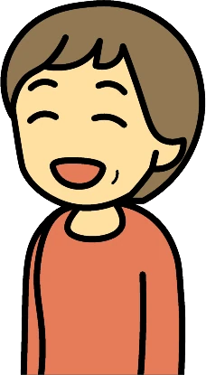
사회복지사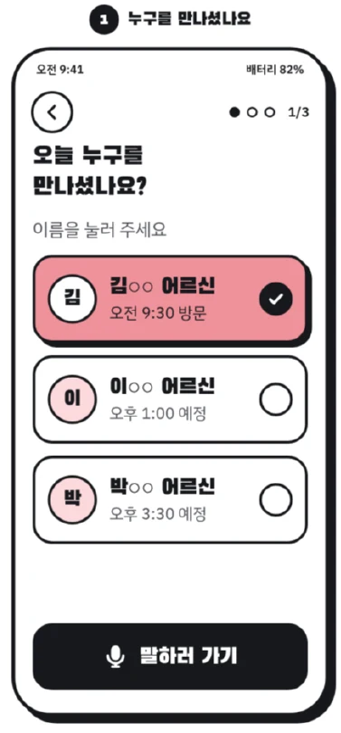
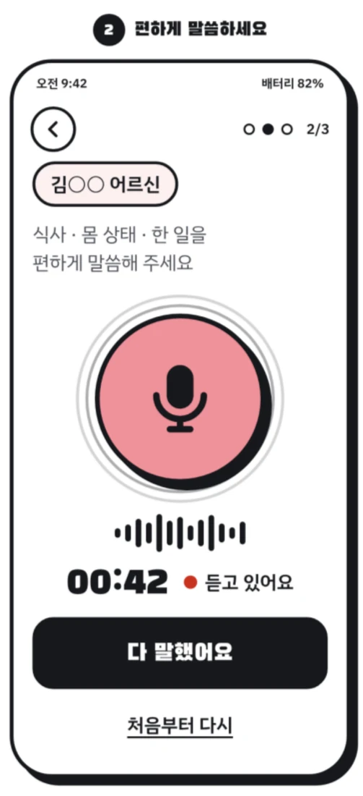
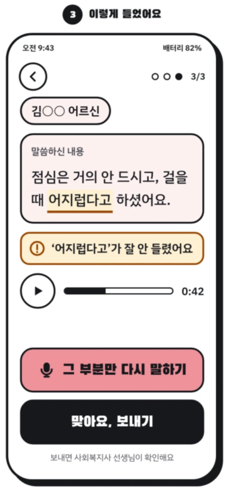
방문한 어르신 이름만 눌러요.
입력할 글자가 없어요.
큰 버튼 하나로 녹음해요.
끝나면 ‘다 말했어요’만 누르면 돼요.
AI가 들은 내용을 보여줘요.
잘 안 들린 부분만 다시 말하면 돼요.
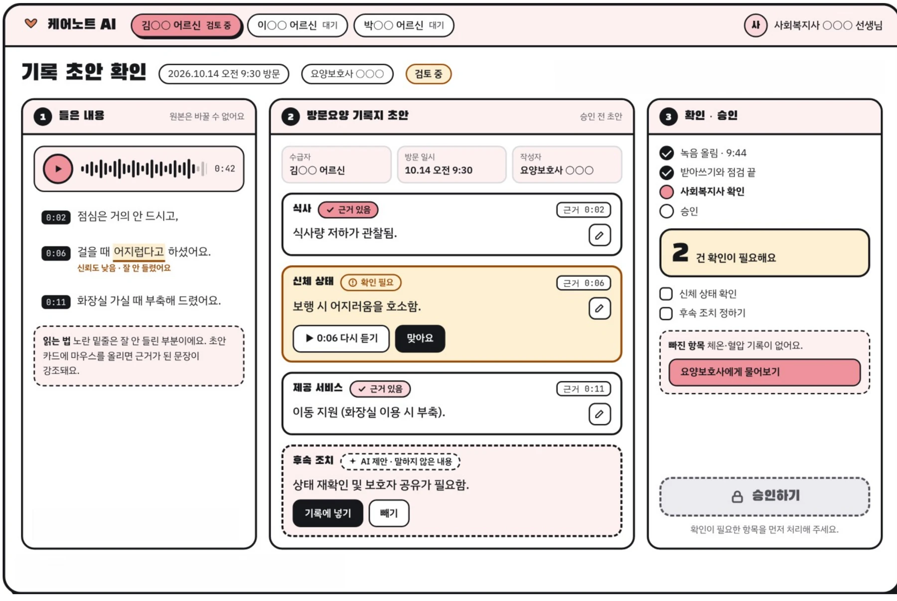
원본 음성과 글은 바꿀 수 없어요.
잘 안 들린 구간은 표시돼요.
문장마다 근거(0:06)가 붙어요.
말하지 않은 AI 제안은 따로 표시돼요.
‘확인 필요’를 모두 처리해야 승인 가능해요.
빠진 항목은 바로 물어봐요.
slot양식 칸 (식사 · 배설 · 신체 상태 …)value기록지에 들어갈 문장polarity있음 / 없음 (부정은 따로)quote전사에서 그대로 따온 구절seg_ids근거 구간 번호 (근거 0:06)certainty명확 / 불명확상태 머신 · 작업 큐 · DB
음성인식·LLM 어댑터와 엔진 비교
사실 추출 · 검증(C1~C6) · 되묻기 · 초안
A~D 비교 실험
녹음·전사 확인 화면 · 초안 확인·승인 화면
정답 시나리오 라벨링 · 질문 문구 · 사용성 테스트
불안하지 않고 안정적인 돌봄으로 컨디션이 좋아졌어요.
가상의 수급자